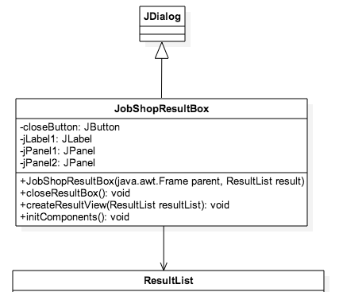
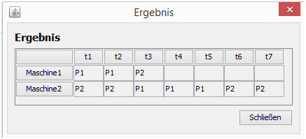

Die Klasse JobShopResultBox

Nachdem das gefundene Optimum berechnet wurde, muss dieses anschließend dargestellt werden. Die Klasse JobShopResultBox erbt daher von der Klasse javax.swing.JDialog und initialisiert alle nötigen Komponenten um das Ergebnis, wie in nachfolgender Abbildung darzustellen:
